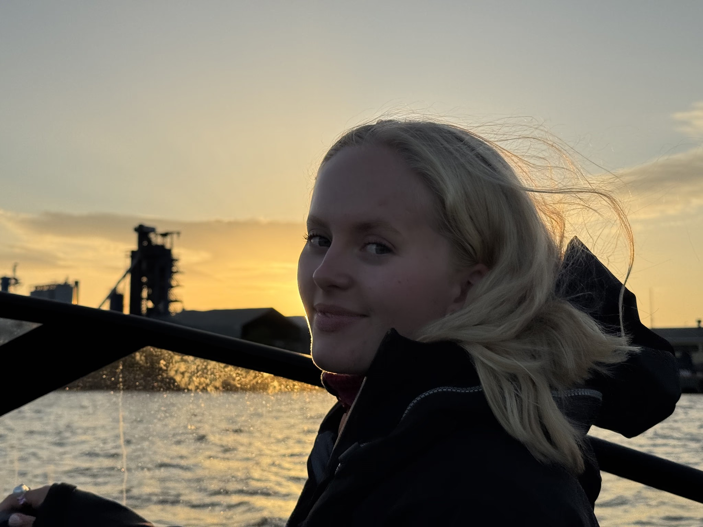

Marte
Strandli
Jeg heter Marte, er 21 år og kommer fra Asker. Nå går jeg fjerde året på Industriell design ved NTNU, med spesialisering i produktdesign. Jeg valgte denne retningen fordi jeg mener man får en annen forståelse for brukergrensesnitt, mennesker og design når man jobber fysisk. Jeg ser stor verdi i å kombinere de «to verdene», fysisk og digitalt.
Utenfor jobb og studier er jeg en veldig sosial person! Jeg elsker å være i naturen og dra på turer, klarer ikke sitte i ro og har alltid en fullbooket uke på fritiden langt i forveien. I studieårene mine har jeg vært veldig aktiv i linjeforeningen vår, Leonardo Linjeforening. Her har jeg vært medlem i mediekomiteen siden jeg startet på studiet. I 2024/2025 satt jeg i styret av linjeforeningen og leder for mediekomiteen. I år skal jeg stille til president/leder av linjeforeningen vår på generalforsamlingen 1. Oktober, og er veldig spent på året som kommer dersom jeg blir valgt!
Jeg tror at det som gjør meg til meg som designer er kombinasjonen av mine mange år med kreativt arbeid og kunst i ungdommen, drivkraften min når det kommer til prosjekter og arbeid, og til slutt min interesse for tekniske løsninger og realfag.

images/om-meg-palett.jpg
Jeg har alltid vært glad i å jobbe kreativt, og har i mange år før jeg begynte å studere produsert mye kunst på fritiden.